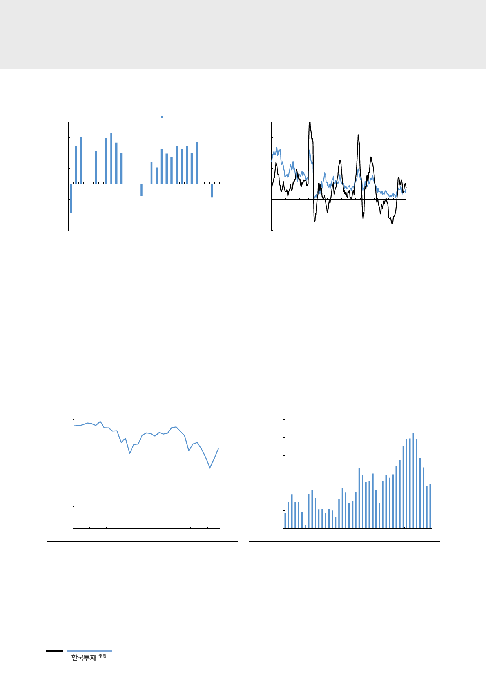

[그림 52] 올해에도 전기요금 인상은 무산
(%)
8
전기요금 변동추이
6
4
2
0
(2)
(4)
(6)
90 93 96 99 02 05 08 11 13 15 18
자료: 통계청, 한국투자증권
[그림 53] 물가 상승에 대한 부담이 인상 여력을 제한
(% YoY)
15
12
9
6
3
생산자물가
소비자물가
0
(3)
(6)
90 93 96 99 02 05 08 11 14 17
자료: 한국은행, 한국투자증권
원전 이용률 하락 원인은
정비일수의 일시적 급증
우리나라 원전 이용률은 2017년 71%, 2018년 1분기 57%까지 하락했다. 3월
55%는 역사상 가장 낮은 수치다. 2011년까지 90%를 웃돌았던 것과 대조적이다.
원전 부품비리 사건이 터졌던 2013년 2분기 69%보다도 낮아졌다. 2017년 글로
벌 평균인 81%와 비교해도 우리나라의 최근 상황은 이례적이다. 이는 2016년
경주 지진과 한빛 2호기 결함을 계기로 안전검사가 강화되면서 원전 정비시간이
당초 일정보다 길어지고 있기 때문이다. 원전 계획예방정비 일수는 2017년을 기
점으로 급증하고 있다. 올해 1분기에는 총 14기가 점검에 들어갔고 가동되지 못
한 시설용량은 전년동기대비 84% 늘었다.
[그림 54] 원전 이용률은 1분기 57%까지 하락
(%)
100
80
60
40
20
0
1Q10 1Q11 1Q12 1Q13 1Q14 1Q15 1Q16 1Q17 1Q18
자료: 한국수력원자력, 한국투자증권
[그림 55] 예방정비가 급증했기 때문
(MW)
12,000
일평균 예방정비
10,000
8,000
6,000
4,000
2,000
0
15
16
17
18
자료: 한국수력원자력, 한국투자증권
안전점검 강화에 따라
늘어지는 예방정비 일정
원전 계획예방정비는 일반적으로 핵연료를 교체하는 시점과 맞물려 진행된다. 보
통 중수로의 경우 15개월, 우리나라 원전의 대부분인 경수로는 18개월마다 돌아
온다. 통상 2~3개월이 소요되었지만 작년부터는 6개월 이상 장기간 정비를 받는
원전이 속출했다. 2016년 6월부터 모든 원전을 점검한 결과, 다수의 원전시설에
서 중대사고 발생시 방사선 누출을 막아주는 격납건물의 철판(CLP;
26